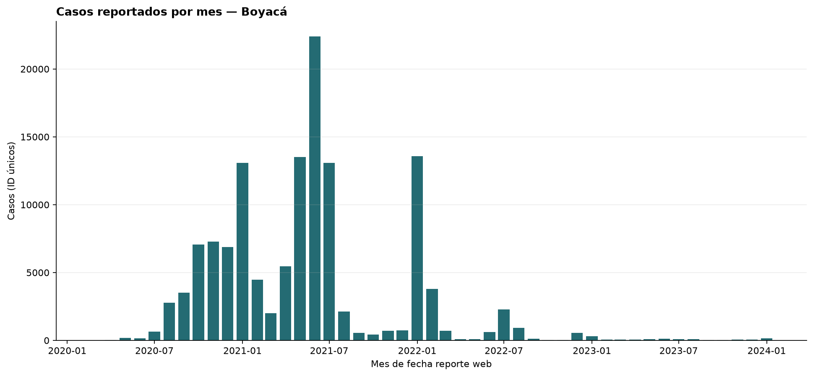
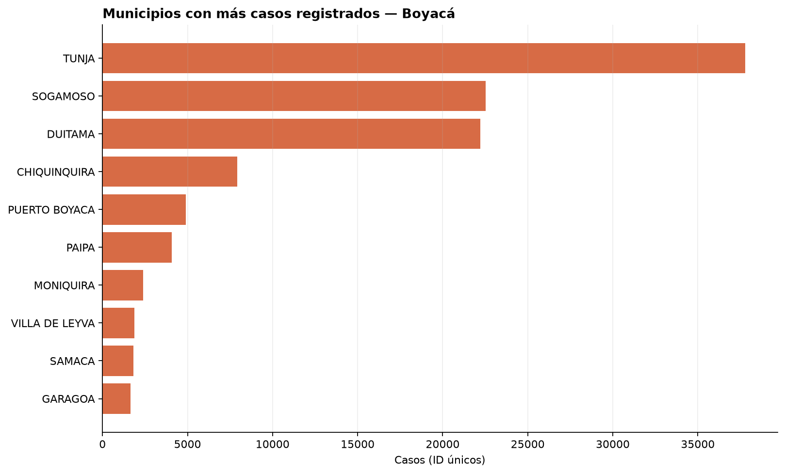

Análisis reproducible de casos positivos
COVID-19 en Boyaca
Departamento filtrado: BOYACA · Periodo de fecha de reporte: 2020-03-25 a 2024-01-17
Fuente: Casos positivos de COVID-19 en Colombia — datos.gov.co
Indicadores
Casos en el periodo131.133IDs de caso únicos con fecha válida
Mes con más reportesJunio de 202122.400 casos reportados
Hallazgo
El máximo mensual de la serie observada ocurrió en Junio de 2021, con 22.400 casos identificados por ID. La serie usa la fecha de reporte web y completa con cero los meses intermedios sin registros.
Gráficos


Casos por mes
| Mes | Casos (ID únicos) |
|---|---|
| 2020-03 | 6 |
| 2020-04 | 33 |
| 2020-05 | 172 |
| 2020-06 | 157 |
| 2020-07 | 650 |
| 2020-08 | 2.791 |
| 2020-09 | 3.531 |
| 2020-10 | 7.065 |
| 2020-11 | 7.267 |
| 2020-12 | 6.871 |
| 2021-01 | 13.067 |
| 2021-02 | 4.466 |
| 2021-03 | 2.002 |
| 2021-04 | 5.449 |
| 2021-05 | 13.504 |
| 2021-06 | 22.400 |
| 2021-07 | 13.083 |
| 2021-08 | 2.126 |
| 2021-09 | 555 |
| 2021-10 | 436 |
| 2021-11 | 698 |
| 2021-12 | 734 |
| 2022-01 | 13.587 |
| 2022-02 | 3.787 |
| 2022-03 | 714 |
| 2022-04 | 96 |
| 2022-05 | 107 |
| 2022-06 | 628 |
| 2022-07 | 2.273 |
| 2022-08 | 910 |
| 2022-09 | 126 |
| 2022-10 | 21 |
| 2022-11 | 45 |
| 2022-12 | 543 |
| 2023-01 | 295 |
| 2023-02 | 59 |
| 2023-03 | 59 |
| 2023-04 | 48 |
| 2023-05 | 102 |
| 2023-06 | 131 |
| 2023-07 | 90 |
| 2023-08 | 90 |
| 2023-09 | 42 |
| 2023-10 | 24 |
| 2023-11 | 61 |
| 2023-12 | 72 |
| 2024-01 | 160 |
Limitaciones
- La fecha de agrupación es «fecha reporte web»; los resultados describen fecha de reporte, no necesariamente inicio de síntomas, diagnóstico o fecha de notificación.
- El conteo usa identificadores únicos de caso; identificadores faltantes se excluyen. Si la fuente contiene correcciones o revisiones históricas, esta extracción no las caracteriza por separado.
- En Boyacá se excluyeron 0 filas con fecha de reporte no interpretable o faltante.
- El gráfico municipal muestra solo los 10 municipios con más casos; los valores no son tasas poblacionales y no permiten inferir riesgo individual.
- El CSV local es una extracción; los resultados pueden no coincidir con versiones posteriores publicadas en la fuente oficial.
Conteos descriptivos: no representan tasas poblacionales ni estimaciones de incidencia.